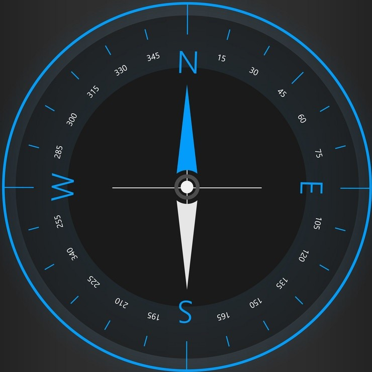

<ion-content [fullscreen]="true">
<!-- Compteur ponctuel -->
  <ion-card class="compteur">
      <ion-card-content>3600 m</ion-card-content>
      <ion-card-content>00:01:35</ion-card-content>
  </ion-card>
 <!-- Compteurgénérl -->
  <ion-card class="compteur">
      <ion-card-content>5000 m</ion-card-content>
      <ion-card-content>00:02:15</ion-card-content>
  </ion-card>
<!-- Boussole -->
  <ion-card class="orientation">
    
  <ion-card-header class="info-compass">
    <ion-card-subtitle class="alt">247 m</ion-card-subtitle>
    <ion-card-title class="degree"> 45° NE</ion-card-title>
  </ion-card-header>
  </ion-card>
  <!-- Buttons -->
  <ion-toolbar>
    <!-- Start/Stop -->
    <ion-buttons slot="start">
      <ion-button *ngIf="!isrunnig" (click)="running()">Start</ion-button>
      <ion-button *ngIf="isrunnig" (click)="stop()">Stop</ion-button>
    </ion-buttons>
    <!-- Restart -->
    <ion-buttons slot="end">
      <ion-button>Reset</ion-button>
    </ion-buttons>
  </ion-toolbar>
</ion-content>